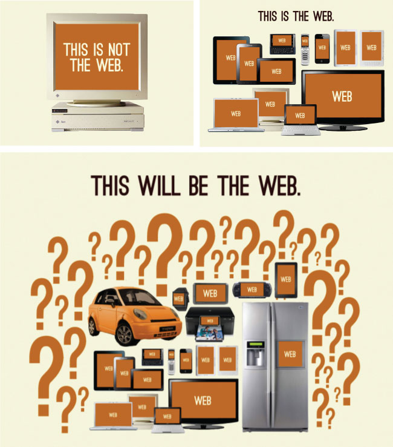
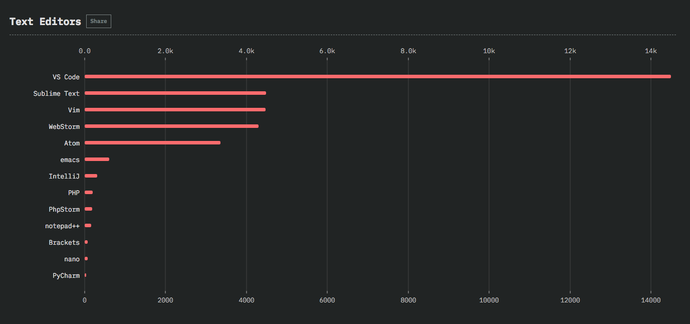

2019前端开发人员手册
作者:Cody Lindley
由Frontend Masters赞助， 通过深入的现代前端开发课程提升您的技能
概述:
这是一份任何人都可以用来了解前端开发实践的指南。 它概括地描绘了2019年前端工程的开发实践之路：如何学习前端以及开发实践时使用到了哪些工具。
本手册特别希望能成为目前正在练习前端开发人员潜在的专业资源，为他们提供完备匹配的学习材料和开发工具。 除此之外，管理人员、首席技术官、教师和猎头都可以使用它来深入了解前端开发。
本手册的内容支持Web技术（HTML，CSS，DOM和JavaScript）以及直接构建在这些开放技术之上的解决方案。 书中引用和讨论的材料要么是最好的，要么是目前提出的问题。
本书并没有完全概述所有前端开发人员可用的资源，欢迎大家建议补充。 本书的价值在于帮助前端开发人员简洁，集中，及时地掌握足够的分类信息，以免任何人对任何一个特定主题产生误解。
手册目标是每年都发布内容更新。
手册内容知多少:
序章 0 提供了前端开发的年度精简回顾以及即将到来或发生的事情。 章节 1 & 2 旨在简要概述前端知识的开发和实践。 章节 3 & 4 推荐汇总学习路径和资源。 章节 5 汇总列出前端开发人员使用的工具。 章节 6 突出的前端信息渠道。
欢迎在Github上提供新内容，建议和修复:
https://github.com/FrontendMasters/front-end-handbook-2019
序章 0. 回顾2018以及展望未来
0.1 — 回顾2018年的前端发展
- React去年有几个值得注意的发布，其中包括 生命周期方法， 上下文API， suspense和 React hooks.
- 微软收购Github。 是的，这已经发生了。
- 仅用CSS描绘Fonts成为现实。
- 过去称之为前端驱动的应用程序，被称呼为"serverless"。 不过，这个术语serverless已经不再适应了。 现在，JAMstack似乎更被开发者们所认同。
- 谷歌今年提供了一些简洁的工具，以帮助加快网页加载速度，即squoosh 和 quicklink。
- 今年 Vue 获得的 Github stars 已经超过了 React。 但是 React 在使用方面仍占据主导地位。
- RE:DOM是类似于React的解决方案，没有虚拟DOM或JSX。
- NW.js 和 Electron 的替代品出现，DeskGap 和 Neutralino.js.
- 2017年前端HTML和CSS开发人员与前端应用程序开发人员之间存在着实现/语言化方面的巨大鸿沟。 在2018年，这种分歧越来越大，越来越多的人开始感受到 这种鸿沟。
- 像最近几年一样，今年充满了尝试与主流JavaScript应用工具竞争的应用/框架解决方案（即React，Angular 和 Vue 等......) 让我为你列出它们：Radi.js， DisplayJS， Stimulus， Omi， Quasar。
- JavaScript框架开始提供自己编译为JavaScript的语言（例如Mint)。
- CodeSandbox 发展成为在线代码共享的主要解决方案。
- CSS Grid 和 CSS Flexbox 在现代浏览器中得到完全支持，并且可以用于一些严格场景。但许多人 不知道何时使用哪一个以及如何使用。
- 许多人意识到类型连接系统的长期成本（例如TypeScript和Flow）。 这些系统实际上和模块连接系统(即 AMD/Require.js)并无什么不同，甚至可能会遇到更多的问题. 最后, 许多开发人员意识到，如果在大型代码库中需要类型，那么与其中包含它们的语言(例如 Reason， Purescript， Elm)相比，结果并不理想。
- CSS 变量在现代Web浏览器中获得支持。
- 在JS中写CSS的扩展受到很多质疑。
- ES modules 用于现代浏览器，实现动态引入。 我们能看到围绕这一现实工具的转变。
- 许多人意识到端到端正确进行测试的起点在很大程度上基于Cypress (比如先是 Cypress ， 然后是 Jest)。
- 即使今年Webpack被大量使用， 但许多开发者认为 Parcel 更容易启动和运行。
- 今年提出的最重要问题之一是JavaScript的成本是多少。
- Babel 7 今年发布。 这是一件大事，因为上一次主要版本是差不多三年前。
- JavaScript 发展变化太快的事实让人们开始讨论 在你学习 JavaScript相关知识（比如 React）之前需要事先知晓掌握多少知识。现实很残酷。
- 很多开发者通过Apollo了解了 GraphQL, 并将其视为数据API的下一代 演进 。
- Gulp 相关工具市场使用率已经退居 NPM/Yarn 之后，但是这并没有阻止微软的 Just 加入竞争行列。
- 今年，人们不仅可以通过网页检查 HTML, CSS, and JavaScript， 甚至可以 检查网页 本身。
- 2018年如果你想了解多少网页仍在使用 jQuery，那么2018前端工具调查非常值得你阅读。
- 不可否认 TypeScript今年获得了很多忠实用户。
- VScode, 作为代码编辑器占据主导地位。
0.2 — 在2019年， 期望...
- 希望“停止使用Sass”能有更多的发展。
- 通过https://cssdb.org密切关注并了解CSS的新增功能（和潜在的附加功能）是一个好主意。
- 来自谷歌的WebP图像格式可以在今年获得所有现代浏览器的支持。
- Prepack高速发展中。
- GraphQL将继续获得大量采用。
- “State of JavaScript”调查作者将在2019年增加一个“State of CSS”调查。
- 密切关注Web Animations API.
- 你认识的人会试图说服你使用TypeScript。
- Babel 将会和swc-project展开一些竞争。
- JAMStack案例将持续发展。
- 将一个代码库发布到许多平台将继续发展。
- 对于大型代码库，更多的开发人员将转向使用ReasonML而不是JavaScript / TypeScript的语言。
- 更多的大型项目开始放弃jQuery，转而支持原生DOM解决方案。
- Web Components! 此时，我不知道Web Components将如何发挥作用。 现实是他们不会消失，一旦炒作结束，他们就没有获得很多动力/用法。
章节 1. 什么是前端开发人员？
本章提供了前端开发和前端开发人员发展的时间线说明。
前端Web开发（也称为客户端开发）是为网站或Web应用程序生成HTML，CSS和JavaScript的实践，以便用户可以直接查看和与之交互。 与前端开发相关的挑战是，用于创建网站前端的工具和技术不断变化，因此开发人员需要不断了解该领域的发展方式。
设计网站的目的是确保当用户打开网站时，他们会以易于阅读和正确的相关格式查看信息。 由于用户现在使用具有不同屏幕尺寸和分辨率的各种设备，因此迫使设计者在设计场地时考虑这些方面，这使事情变得更加复杂。 他们需要确保他们的网站在不同的浏览器（跨浏览器），不同的操作系统（跨平台）和不同的设备（跨设备）中正确显示，这需要在开发人员方面进行仔细的规划。
 Image source: https://www.upwork.com/hiring/development/front-end-developer/
Image source: https://www.upwork.com/hiring/development/front-end-developer/
一个前端开发者...
前端开发人员使用Web技术（即HTML, CSS，和 JavaScript）构建和开发网站和Web应用程序，这些技术通常在Open Web Platform上运行或充当非Web平台环境的编译输入（即 React Native）。
一个人通过学习构建依赖于HTML，CSS和JavaScript的网站或Web应用程序进入前端开发领域，并且通常在web浏览 中运行，但也可以在无头浏览器, WebView或本机运行时环境编译中运行。 下面解释这四个运行时间场景。
Web浏览器（最常见）
Web浏览器是用于检索，呈现和遍历WWW上的信息的软件。 通常，浏览器在台式机或笔记本电脑，平板电脑或手机上运行，但最近几乎可以在任何东西上找到浏览器（例如，在冰箱，汽车等）。
最常见的Web浏览器（按照最常用的顺序显示）：
无头浏览器
无头浏览器是没有图形用户界面的网络浏览器，可以从命令行界面以编程方式控制该网络浏览器以用于网页自动化（例如，功能测试，抓取，单元测试等）。 将无头浏览器视为可以从命令行以编程方式运行的浏览器，该命令行可以检索和遍历网页代码。
最常见的无头浏览器是：
Webviews
Webviews由本机操作系统（在本机应用程序中）用于运行网页。可以想象一个像iframe的webview或来自web浏览器的单个选项卡，它嵌入在设备上运行的本机应用程序中（例如， iOS， android， windows）。
webview开发最常用的解决方案是：
Web Tech原生
随着发展，前端开发人员可以使用从Web浏览器开发中学到的知识来为不受浏览器引擎（即Web平台）推动的环境制作代码。 最近，开发环境正在被设想为使用Web技术（例如，CSS和JavaScript）而没有Web引擎来创建本机应用程序。
这些开发环境的一些示例：
章节 2. 前端开发实践：概述
本章将分解并广泛地描述前端工程的实践，从“如何成为前端开发人员”开始。
2.1 - 如何成为前端开发人员
如何成为前端开发人员？ 嗯，这很复杂。 试试这个路线图：

图片来自： https://github.com/kamranahmedse/developer-roadmap
时至今日，似乎并没有大学开设了前端工程学位。而且我也很少听到或遇到前端开发人员经历了一个可能被否定蔑视的计算机科学学位或平面设计学位，最终选择专业地编写HTML，CSS和JavaScript。从我的角度来看，今天在前端工作的大多数人似乎从头开始自学，或者从设计或计算机科学领域跨越到前端开发工作领域。
今天如果您想要成为一名前端开发人员，我建议您努力了解下面概述的流程（第3章和第4章将深入探讨有关学习资源的更多细节）。
- 大致了解一下网络 平台的工作原理。 确保您了解HTML, CSS, DOM, JavaScript, 域名, DNS, URLs, HTTP, 浏览器和服务器的内容和作用。暂时不要过于深入了解，只需要了解其中的组成部分以及它们如何松散地融合在一起工作的。 首先从构建简单的网页开始。
- 学习 HTML
- 学习 CSS
- 学习 JavaScript
- 学习 DOM
- 了解用户界面设计的基础知识（即UI模式，交互设计，用户体验设计和可用性）。
- 学习 CLI/命令行
- 学习软件工程的实践（即应用程序设计/架构，模板，Git，测试，监控，自动化，代码质量，开发方法）。
- 根据您个人的喜好（例如Webpack，React和Mobx）对您的代码工具进行选择和定制。
- 学习 Node.js
关于学习的简短建议。在学习抽象之前，先了解实际的基础技术。学习jQuery，先学习DOM。 学习SASS，先学习CSS。 学习JSX，先学习HTML。 学习TypeScript，先学习JavaScript。 学习Handlebars，先学习JavaScript ES6模板。 不要只光顾使用Bootstrap，学习UI模式。
最近出现了许多非认证的，昂贵的前端代码学校/训练营。 这些成为前端开发人员的途径通常是教师指导的课程，遵循更传统的学习方式，来自传统课程（即教学大纲，考试，测验，项目，团队项目，成绩等）。
如果您正在考虑昂贵的培训计划，请慎重考虑，如今是互联网时代! 任何你想要学习的东西你都可以在网络上花费很少甚至免费找到。但是，如果您需要有人告诉您如何学习和教授学习方法，并让对您的学习负责，您就应该考虑传统的讲师领导课堂。 否则，实际上我不知道有任何其他职业可以通过使用免费的互联网以及对知识的强烈渴望，甚至仅靠开通每月几美元的屏幕录像会员资格来学习职业技能的。
例如，如果您想今天开始学习，可以使用以下一个或多个链接跳转资源：
- 开始使用Web [文章]
- 你想成为一个前端开发工程师 [视频]
- 前端大师学习路径 [收费视频]
- Web开发简介 [收费视频]
- 树形结构系统学习 [收费视频]
- 前端Web开发人员细节深挖 [收费视频]
- 成为前端开发者 [收费视频]
- freeCodeCamp [互动][视频]
在刚开始时，您可能会害怕学习过于复杂的语法框架。 事实上换个角度说学习框架 （例如 jQuery） 在一直有助于提高开发技能，有助于您夯实基础和理解底层原理。
假设在这个过程中，您不仅要学习代码原理，还要在学习和研究开发工具。有人建议只学习原理，有人建议只学习如何操作开发工具。 我建议您找到两者的组合，以匹配你的大脑深入理解如何工作和做到这一点。这是一个混合的学习过程！ 所以，不要只是简单地读它，做它。 学习，做。 学习，做。 事物无限重复，因为事物变化很快。 这就是为什么学习基础知识，而不是框架是如此重要。
2.2 - 前端职位名称
随着前端开发多年不断发展，前端开发人员逐渐演变成两个既然不同的类型。一种是专注于JavaScript的程序员，可能具有计算机科学技能和软件开发背景，他们为前端运行环境时编写JavaScript。他们很可能更抽象地看待HTML和CSS（比如 JSX 和 CSS）。另一种很可能是非计算机科班出身的开发人员，他们专注于HTML，CSS和JavaScript，因为它特别适用于UI的创造。 在2019年，当您进入或试图了解前端开发者时，您绝对会感受到这种差别或鸿沟。 前端开发人员这个术语处于无意义的边缘，因为其并没有明确说明它是哪种类型的前端开发人员。
以下是各种前端职称的列表和说明（想要全部记住真的很难）。前端开发人员通用的或最常用的职称就是“前端开发人员”或“前端工程师”。请注意，任何包含单词“front-end”，“client-side”，“web UI”，“HTML”，“CSS”或“JavaScript”的职称通常都会推断出其有一定程度的HTML，CSS， DOM和JavaScript相关知识。
前端开发者：描述在某种程度上熟悉HTML，CSS，DOM和JavaScript以及在Web平台上实现这些技术的开发人员的通用职称。
前端工程师（又叫JS开发或全栈JS开发）：描述具有计算机科学，计算机工程背景并使用这些技能处理前端技术的开发人员的职称。 这个角色通常需要计算机科学知识和多年的软件开发经验。当“JavaScript应用程序”一词包含在职称中时，这将表示开发人员应该是具有高级编程，软件开发和应用程序开发技能的高级JavaScript开发人员（即具有多年构建前端软件应用程序经验）。
CSS/HTML开发者：描述熟悉HTML和CSS的开发人员（不包括JavaScript和应用程序）的前端职称。
前端网页设计师：当“设计师”一词包含在职称中时，这将表示设计师将拥有前端技能（即HTML和CSS）以及专业设计（视觉设计和交互设计）技能。
UI （用户界面交互）开发者/工程师：当职称中包含“界面”或“UI”一词时，这将表示开发人员除了具有前端开发人员技能或前端工程技能外，还应具备交互设计技能。
移动/平板电脑前端开发者：当职称中包含“移动”或“平板电脑”一词时，这将表示开发人员具有开发移动设备或平板电脑设备上（本机或在Web平台上，即在浏览器中）运行的前端的经验。
前端SEO专家：当职称中包含单词“SEO”时，这将表示开发人员具有丰富的SEO策略制定前端技术经验。
前端可访问性专家：当职称中包含“辅助功能”一词时，这将表示开发人员在制定支持可访问性要求和标准的前端技术方面拥有丰富的经验。
前端自动化工程师：当职称中包含“DevOps”一词时，这将表示开发人员在与协作，集成，部署，自动化和质量相关的软件开发实践方面拥有丰富的经验。.
前端测试工程师：当“测试”或“QA”一词包含在职称中时，这将表示开发人员具有丰富的测试和管理软件的经验，涉及单元测试，功能测试，用户测试和A / B测试。
注意：
- 如果您在职称中看到“Full Stack”或通用“Web Developer”术语，雇主可能会使用这些词来描述负责Web / app开发各个方面的角色，即包含前端 （可能包括设计）和后端。
2.3 - 前端开发人员使用的基础Web技术

前端开发人员采用以下核心Web技术（建议按此顺序学习）：
- 超文本标记语言（又名HTML）
- 层叠样式表（又称CSS）
- 统一资源定位器（又名URL）
- 超文本传输协议（又称HTTP）
- JavaScript编程语言（又名ECMAScript 262）
- JavaScript对象简谱（又名JSON）
- 文档对象模型（又名DOM）
- Web API（又名HTML5相关或浏览器API）
- 网页内容可访问性指南（又名WCAG） & 可访问的富Internet应用程序（又名 ARIA）
有关所有Web相关规范的完整列表，请查看platform.html5.org或MDN Web APIs.
下面介绍定义的九种技术以及每种技术的相关文档和规范的链接。
超文本标记语言（又名HTML）
超文本标记语言（通常称为HTML）是用于创建网页的标准标记语言。 Web浏览器可以读取HTML文件并将其呈现为可见或可听的网页。 HTML在语义上描述了网站的结构以及用于表示的提示，使其成为标记语言，而不是编程语言。
— 维基百科
相关的规范/文档：
- All W3C HTML Spec
- HTML元素来自目前已制定的标准
- 全局属性
- HTML 5.2 from W3C
- HTML 5.3 from W3C
- HTML属性引用
- HTML元素引用
- HTML语法来自目前已制定的标准
层叠样式表（又称CSS）
层叠样式表（CSS）是一种样式表语言，用于描述用标记语言编写的文档的外观和格式。 虽然最常用于更改用HTML和XHTML编写的网页和用户界面的样式，但该语言可以应用于任何类型的XML文档，包括纯XML，SVG和XUL。 与HTML和JavaScript一起，CSS是大多数网站使用的基础技术，用于创建具有视觉吸引力的网页，Web应用程序的用户界面以及许多移动应用程序的用户界面。
— 维基百科
相关的规范/文档：
超文本传输协议（又称HTTP）
超文本传输协议（HTTP）是用于分布式协作超媒体信息系统的应用协议。 HTTP是万维网数据通信的基础。
— 维基百科
相关的规范/文档：
统一资源定位器（又名URL）
统一资源定位符（URL）（也称为Web地址）是对资源的引用，该资源指定计算机网络上资源的位置以及用于检索它的机制。 URL是特定类型的统一资源标识符（URI），尽管许多人可以互换地使用这两个术语。 URL表示访问指示资源的方法，而不是每个URI都是如此。 URL最常用于引用网页（http），但也用于文件传输（ftp），电子邮件（mailto），数据库访问（JDBC）和许多其他应用程序。
— 维基百科
相关的规范/文档：
文档对象模型（又名DOM）
文档对象模型（DOM）是一种跨平台且与语言无关的约定，用于表示HTML，XHTML和XML文档中的对象并与之交互。 每个文档的节点都以树结构组织，称为DOM树。 可以通过使用对象上的方法来寻址和操纵DOM树中的对象。 DOM的公共接口在其应用程序编程接口（API）中指定。
— 维基百科
相关的规范/文档：
JavaScript编程语言（又名ECMAScript 262）
JavaScript是一种高级，动态，无类型和解释的编程语言。 它已在ECMAScript语言规范中标准化。 除HTML和CSS外，它还是万维网内容制作的三大基本技术之一; 大多数网站都使用它，所有没有插件的现代网络浏览器都支持它。 JavaScript是基于原型的第一类函数，使其成为一种多范式语言，支持面向对象，命令式和函数式编程风格。 它具有用于处理文本，数组，日期和正则表达式的API，但不包括任何I / O，例如网络，存储或图形工具，在嵌入它的主机环境中依赖它们。
— 维基百科
相关的规范/文档：
Web API（又名HTML5相关或浏览器API）
使用JavaScript编写Web代码时，可用的API很多。 下面是您在开发Web应用程序或站点时可以使用的所有接口（即对象类型）的列表。
— Mozilla
相关的规范/文档：
JavaScript对象简谱（又名JSON）
它是用于异步浏览器/服务器通信（AJAJ）的主要数据格式，主要取代XML（由AJAX使用）。 虽然JSON最初源自JavaScript脚本语言，但它是一种与语言无关的数据格式。 许多编程语言都可以使用用于解析和生成JSON数据的代码。 JSON格式最初由Douglas Crockford指定。 目前，它由两个竞争标准RFC 7159和ECMA-404描述。 ECMA标准是最小的，仅描述允许的语法，而RFC也提供了一些语义和安全性考虑因素。 JSON的官方Internet媒体类型是application / json。 JSON文件扩展名为.json。
— 维基百科
相关的规范/文档：
网页内容可访问性指南（又名WCAG） & 可访问的富Internet应用程序（又名 ARIA）
可访问性是指为残疾人设计的产品，设备，服务或环境。 可访问设计的概念确保“直接访问”（即，无辅助）和“间接访问”意味着与人的辅助技术（例如，计算机屏幕阅读器）的兼容性。
— 维基百科
2.4 - 潜在的前端开发人员技能

图片来源：http://blog.naustud.io/2015/06/baseline-for-modern-front-end-developers.html
对于任何类型的专业前端开发人员角色，都应该对HTML，CSS，DOM，JavaScript，HTTP / URL和Web浏览器有基本到高级的理解。
除了上面提到的技能之外，前端开发人员也应该具备以下一项或多项技能：
- 内容管理系统（又叫CMS）
- Node.js
- 跨浏览器兼容测试
- 跨平台兼容测试
- 单元测试
- 跨设备兼容测试
- 辅助功能/ WAI-ARIA
- 搜索引擎优化（又名SEO）
- 交互或用户界面设计
- 用户体验
- 可用性
- 电子商务系统
- 门户系统
- 线框图（低保真度的设计原型）
- CSS布局/网格
- DOM操作（例如，jQuery）
- 移动网络性能
- 负载测试
- 性能测试
- 渐进式增强/优雅降级
- 版本控制（比如Git）
- MVC / MVVM / MV*
- 函数式编程
- 数据格式（例如，JSON，XML）
- 数据API（例如Restful API）
- Web字体嵌入
- Web字体可缩放矢量图形（又名SVG）
- 常用表达式
- 微数据/微格式
- 任务运行器，构建工具，过程自动化工具
- 响应式网页设计
- 面向对象的编程语言
- 应用架构
- 模块
- 依赖管理
- 包管理
- JavaScript动画
- CSS动画
- 图表
- UI组件
- 代码质量测试
- 代码覆盖测试
- 代码复杂度分析
- 集成测试
- 命令行/ CLI
- 模板策略
- 模板引擎
- 单页应用程序
- Web /浏览器安全性
- 浏览器开发者工具
2.5 - 前端开发人员开发平台
前端开发人员制作HTML，CSS和JS，它们通常在以下操作系统之一（也称为OS）的Web平台（例如Web浏览器）上运行：
这些操作系统通常在以下一个或多个设备上运行：
- 台式电脑
- 笔记本电脑/上网本电脑
- 移动手机
- 平板电脑
- 电视
- 手表
- 其他事物（即你能想象的任何东西，汽车，冰箱，灯，恒温器等）

图片来源：https://www.enterpriseirregulars.com/104084/roundup-internet-things-forecasts-market-estimates-2015/
通常来说，前端技术可以使用以下Web平台方案在上述操作系统和设备上运行：
- 网页浏览器（比如：谷歌， IE， Safari， 火狐）。
- 无头浏览器（比如：谷歌无头浏览器/Puppeteer ）。
- WebView/浏览器选项卡（比如iframe）嵌入在本机应用程序中作为运行时，具有到本机API的桥接。 WebView应用程序通常包含由Web技术构建的UI（即HTML，CSS和JS）。（例子：Apache Cordova， NW.js， Electron）。
- 从Web技术构建的本机应用程序，在运行时通过与本机API的桥接进行通讯。 UI将使用本机UI部件（例如iOS本机控件）而不是web技术。 （示例：NativeScript， React Native）。
2.6 - 前端团队
前端开发人员通常只是团队中的一个人，他们设计和开发Web技术运行的网站，Web应用程序或本机应用程序。
用于为Web平台构建专业网站或软件的简单开发团队通常最低限度地包含以下角色。
- 可视设计师（设计字体，颜色，间距，情感，视觉概念和主题）
- UI/交互设计师/信息架构师（绘制线框图，指定所有用户交互和UI功能，构建信息）
- 前端开发人员（开发在客户端/设备上运行的代码）
- 后端开发人员（编写在服务器上运行的代码）
角色根据重叠技能排序。前端开发人员通常可以很好地处理UI/交互设计以及后端开发。团队成员身兼数职的情况并不少见。
假设上述团队由项目负责人或某种产品所有者（即利益相关者，项目经理，项目负责人等）指导。
较大的Web团队可能包含以下角色：
- SEO策略师
- 自动化工程师
- 性能工程师
- API开发人员
- 数据库管理员
- QA工程师/测试人员
2.7 - 全栈工程师

术语“全栈”开发人员已经具有多种含义。当使用该术语没有一个含义是明确时,只需考虑下面两个调查的结果。这些结果可能使人们相信成为一个全栈开发者是常见的。但是，根据我近20年的经验显示，这通常不是专业背景下会发生的情况。


图片来源：https://insights.stackoverflow.com/survey/2017#developer-profile-specific-developer-types
设计和开发网站或Web应用程序的角色需要在视觉设计，UI /交互设计，前端开发和后端开发领域拥有深厚的技能和丰富经验。任何能够在专业水平上填补这4个角色中的一个或多个角色的人都是极其罕见的人才。
实际上，你应该寻求聘请单个角色的专家（即视觉设计，交互设计/ IA，前端开发，后端开发）。 毕竟声称在一个或多个角色中拥有专家级别技能的人非常罕见。
然而，鉴于JavaScript技术堆栈已经发展到前后端（即Node.js），找到一个可以编写前端和后端代码的全栈JS开发人员变得不那么困难了。通常这些全栈开发人员只处理JavaScript。找到可以同时编写前端（不包括视觉设计，交互设计和CSS），后端，API和数据库代码的开发人员不再像以前那样不可思议，这种情况在我看来仍然是很难出现的，但并不像以前那样罕见。因此，我不建议开发人员着手成为“全栈”开发人员。在极少数情况下，它可以带来优势。但是，一般在前端开发人员职业生涯的概念里，我选择专注于前端技术。
2.8 - 前端面试
准备：
测验：
您可能会被问到的问题：
您问的问题：
2.9 - 前端工作展示板
存在大量技术职位列表网点。 下面缩小的列表是目前寻找特定前端职位/职业的最相关资源。
- authenticjobs.com
- careers.stackoverflow.com
- css-tricks.com/jobs
- frontenddeveloperjob.com
- glassdoor.com
- jobs.github.com
- linkedin.com
- remote.co
- weworkremotely.com
- www.smashingmagazine.com/jobs/
注意：
- 这些公司支持前端开发人员远程办公。
2.10 - 前端工资
美国对于中级前端开发商的全国平均水平介于6.5万美元到10万美元之间。
当然，当你第一次起步进入40k左右的区间时取决于职位和经验。
注意:
- 前端专家/高级前端开发人员/工程师可以在任何他们想要的地方生活（即远程工作）并且年薪超过15万美元（访问angel.co，注册，查找超过15万美元的前端工作或在Stack Overflow Jobs查找工资范围）。
章节 3. 学习前端开发：自学资源/建议
本章重点介绍了个人可以用来指导自己学习和如何成为前端开发人员的许多资源（视频培训，书籍等）。
所识别的学习资源（文章，书籍，视频，截屏视频等）将包括免费和付费资料。 付费材料将以[付费]表示。
3.1. - 学习互联网/网络
互联网是一个互联计算机网络的全球系统，它使用互联网协议（TCP / IP）连接全球数十亿台设备。 它是一个由数百万个本地到全球范围的私人，公共，学术，商业和政府网络组成的网络网络，通过广泛的电子，无线和光纤网络技术相互连接。 因特网承载广泛的信息资源和服务，例如互联超文本文档和万维网（WWW）的应用，电子邮件，电话和用于文件共享的对等网络。
— 维基百科

图片来源：https://www.helloitsliam.com/2014/12/20/how-the-internet-works-infographic/
- 什么是互联网？ [视频]
- 互联网基础 [视频]
- 网络如何运作 [文章]
- 互联网如何运作？https://developer.mozilla.org/en-US/docs/Learn/Common_questions/How_does_the_Internet_work and http://web.stanford.edu/class/msande91si/www-spr04/readings/week1/InternetWhitepaper.htm [文章]
- 互联网工作原理 [视频]
- 5分钟内学完互联网如何工作 [视频]
- 网络工作原理 [视频]
- 什么是互联网？ 或许是“你说番茄，我说TCP/IP” [文章]
- 不要害怕互联网

图片来源：http://www.bitrebels.com/technology/find-out-who-runs-the-internet-chart/
3.2. - 学习Web浏览器
Web浏览器（通常称为浏览器）是用于在万维网上检索，呈现和遍历信息资源的软件应用程序。 信息资源由统一资源标识符（URI / URL）标识，并且可以是网页，图像，视频或其他内容。 资源中存在的超链接使用户能够轻松地将其浏览器导航到相关资源。 虽然浏览器主要用于万维网，但它们也可用于访问私有网络中的Web服务器或文件系统中的文件提供的信息。
— 维基百科
最常用的浏览器（在桌面和移动设备上）是：
- 谷歌浏览器Chrome（内核引擎：Blink + V8）
- 火狐浏览器Firefox （内核引擎：Gecko + SpiderMonkey）
- Internet Explorer即IE（内核引擎：Trident + Chakra）
- Safari（内核引擎：Webkit + SquirrelFish）

图片来源：http://gs.statcounter.com/browser-market-share
浏览器和Web技术（比如API）的演变
- evolutionoftheweb.com [文章]
- Web浏览器的发展史 [文章]
最常用的无头浏览器是：
- 谷歌无头浏览器 （内核引擎：Blink + V8）
- SlimerJS（内核引擎：Gecko + SpiderMonkey）
浏览器如何工作
- 我学到的关于浏览器和Web的20件事 [文章]
- 速学CSS：浏览器如何布局网页 [文章]
- 浏览器的工作原理：现代Web浏览器的幕后故事 [文章]
- Quantum即将到来：浏览器引擎是什么？
- 浏览器如何实际渲染网站 [视频]
- 什么造成重绘/回流 [文章]
- 每个前端开发人员应该知道的关于网页渲染的内容 [文章]
浏览器优化：
浏览器比较
- Web浏览器的优劣 [视频]
浏览器黑客
- browserhacks.com [文章]
浏览器开发
过去，前端开发人员花了很多时间在几个不同的浏览器中开发代码。这曾经是一个很大的问题相较于今时今日，今天，框架工具（例如，React，Webpack，Post-CSS，Babel等......）与现代浏览器相结合，使浏览器开发变得相当容易。新的挑战不是用户将使用哪种浏览器，而是他们将在哪个设备上运行浏览器。
常青浏览器-浏览器的最新版本
大多数现代浏览器的最新版本被认为是常青浏览器。也就是说理论上，它们应该在不提示用户的情况下自动地进行更新。这种向自我更新浏览器的转变是应对不自动更新的旧浏览器的一种缓慢消除过程。
选择一种浏览器
截至今天，大多数前端开发人员使用Chrome和“Chrome Dev Tools”来开发前端代码。由此最常用的现代浏览器都提供了一种开发人员工具。挑选一个用于开发是一个主观的选择。更重要的问题是您必须哪些设备支持哪些浏览器，然后进行适当的测试。
3.3 - 学习域名系统（又名DNS）
域名系统（DNS）是用于计算机，服务或连接到因特网或专用网络的任何资源的分层分布式命名系统。 它将各种信息与分配给每个参与实体的域名相关联。 最突出的是，它将人们可以轻易记忆的域名转换为全球计算机服务和设备所需的数字IP地址。 域名系统是大多数互联网服务功能的重要组成部分，因为它是互联网的主要目录服务。
— 维基百科

图片来源：http://www.digital-digest.com/blog/DVDGuy/wp-content/uploads/2011/11/how_dns_works.jpg
- DNS术语，组件和概念简介 [文章]
- DNS解析 [视频]
- DNS工作原理 [文章]
- 互联网：IP地址和DNS [视频]
- 什么是域名？ [文章]
3.4 - 学习HTTP /网络（包括CORS和WebSockets）
HTTP - 超文本传输协议（HTTP）是用于分布式协作超媒体信息系统的应用协议。 HTTP是万维网数据通信的基础。
— 维基百科
HTTP规范
HTTP文档
- MDN HTTP [文章]
HTTP视频/文章/教程
- 高性能浏览器网络：每个Web开发人员应该了解的关于网络和Web性能的内容 [文章]
- MDN: HTTP概述 [文章]
- HTTP权威指南 [文章][付费]
- HTTP/2 常见问题 [文章]
- HTTP基础 [视频][付费]
- HTTP/2基础 [视频][付费]
- HTTP: 每个Web开发人员必须知道的协议 - 第1部分 [文章]
- HTTP: 每个Web开发人员必须知道的协议 - 第2部分 [文章]
- 简洁的HTTP [文章]
HTTP状态码
- HTTP状态码
- 一分钟学完HTTP状态代码 [视频]
CORS - 跨源资源共享（CORS）是允许从源自资源的域之外的另一域请求网页上的受限资源（例如，字体）的机制。
— 维基百科
CORS规范
CORS
- CORS如何运行 [文章][付费]
- HTTP访问控制（CORS） [文章]
WebSockets - WebSocket是一种通过单个TCP连接提供全双工通信信道的协议。 WebSocket协议在2011年由IETF标准化为RFC 6455，Web IDL中的WebSocket API由W3C标准化。
— 维基百科
WebSockets
- 使用WebSockets连接Web [视频]
- WebSocket：轻量级客户端 - 服务器通信 [文章][付费]
- WebSocket协议 [文章]
3.5 - 学习虚拟主机
网络托管服务是一种互联网托管服务，允许个人和组织通过万维网访问其网站。 Web主机是指在客户使用或租用的服务器上提供空间以及提供Internet连接（通常在数据中心中）的公司。
— 维基百科
常用学习：
- 网页主持101：立即让您的网站在网上直播 [视频]

图片来源：https://firstsiteguide.com/wp-content/uploads/2016/06/what-is-web-hosting-infographic.jpg
3.6 - 前端开发通用学习
- 前端训练营/在网上的日子 [文章]
- 准备成为职业的Web开发人员
- 成为前端Web开发人员 [视频][付费]
- 成为Web开发人员 [文章]
- freeCodeCamp [互动]
- 前端Web开发人员纳米学位 [视频][付费]
- 前端Web开发职业生涯启动 [视频][付费]
- 前端Web开发：入门 [视频][付费]
- 前端Web开发快速入门使用HTML5，CSS和JavaScript [视频][付费]
- 前端Web开发：Big Nerd Ranch指南 [文章][付费]
- 完整的Web开发简介 [视频][付费]
- 学习前端Web开发 [视频][付费]
- 你想成为一名前端工程师 [视频]
- codecademy.com:Web开发路径 [互动][免费/付费]
- web.dev [文章]
3.7 - 学习用户界面/交互设计
用户界面设计 - 用户界面设计（UI）或用户界面工程是用于机器和软件（例如计算机，家用电器，移动设备和其他电子设备）的用户界面的设计，其重点在于最大化用户体验。 用户界面设计的目标是在完成用户目标（以用户为中心的设计）方面使用户的交互尽可能简单有效。
— 维基百科
交互设计模式 - 设计模式是记录常见设计问题的解决方案。这个想法是由建筑师克里斯托弗亚历山大用于介绍城市规划和建筑建筑，并已适应各种其他学科，包括教学，开发组织和过程，软件架构和设计。
— 维基百科
用户体验设计 - 用户体验设计（UXD或UED或XD）是通过改善用户与产品之间的交互中提供的可用性，可访问性和愉悦来增强用户满意度的过程。 用户体验设计包括传统的人机交互（HCI）设计，并通过解决用户所感知的产品或服务的所有方面来扩展它。
— 维基百科
人机交互 - 人机交互（HCI）研究计算机技术的设计和使用，特别关注人（用户）和计算机之间的接口。 人机交互领域的研究人员都观察了人类与计算机交互的方式以及设计技术，这些技术可以让人类以新颖的方式与计算机进行交互。
— 维基百科
我的小建议是阅读以下关于此事的规范性文本，以便可以支持并潜在地构建可用的用户界面。
- 关于界面：交互设计的要点 [文章][付费]
- 黑客设计：逆向工程美 [文章][付费]
- 非传统设计 [视频]
- 接口设计 [文章][付费]
- 设计Web界面：丰富交互的原则和模式 [文章][付费]
- 不要让我思考，重新审视：一种常用的Web可用性方法 [文章][付费]
3.8 - 学习HTML & CSS
HTML - 超文本标记语言（通常称为HTML）是用于创建网页的标准标记语言。 Web浏览器可以读取HTML文件并将其呈现为可见或可听的网页。 HTML在语义上描述了网站的结构以及用于表示的提示，使其成为标记语言，而不是编程语言。
— 维基百科
CSS - 层叠样式表（CSS）是一种样式表语言，用于描述用标记语言编写的文档的外观和格式。 虽然最常用于更改用HTML和XHTML编写的网页和用户界面的样式，但该语言可以应用于任何类型的XML文档，包括纯XML，SVG和XUL。 与HTML和JavaScript一起，CSS是大多数网站使用的基础技术，用于创建具有视觉吸引力的网页，Web应用程序的用户界面以及许多移动应用程序的用户界面。
— 维基百科
就好比建造房屋，人们可能会认为HTML框架和CSS是屋内的绘画和装饰。
通用学习：
- CSS绝对居中 [文章]
- CSS定位 [视频][付费]
- Web开发简介（v2） [视频][付费]
- 前端Web开发：入门 [视频][付费]
- 前端Web开发快速入门使用HTML5，CSS和JavaScript [视频][付费]
- HTML和CSS：设计和构建网站 [文章][付费]
- HTML文档流 [视频][付费]
- HTML掌握：语义，标准和样式 [文章][付费]
- Interneting is Hard [文章]
- HTML / CSS简介：制作网页 [视频]
- 学习编码HTML和CSS [文章]
- 学习CSS布局 [文章]
- 标记表 [文章]
- MDN: HTML [文章]
- MDN: CSS [文章]
- 语义HTML：如何构建网页 [视频]
- 可靠的HTML表单结构 [视频]
- 理解CSS Box模型 [视频]
- 弹性网页设计 [文章]
掌握CSS：
- Flexbox完整指南 [文章]
- 用于响应式Web设计的CSS网格和Flexbox [视频][付费]
- CSS饭店 [互动]
- CSS选择器从CSS4到CSS1 [文章]
- CSS揭秘：日常网页设计问题的更好解决方案 [文章][付费]
- CSS3 [文章]
- 深入CSS v2 [视频][付费]
- 什么是Flexbox？！ 一个简单，免费的20个视频课程，将帮助您掌握CSS Flexbox [视频]
- 30秒的CSS - 精选的有用CSS片段集合，您可以在30秒或更短的时间内理解这些片段。 [文章]
参考文献/文档：
- CSS触发器...布局，绘画和复合的游戏
- cssreference.io
- cssvalues.com
- Chrome浏览器的默认CSS
-
Head - 可以包含在文档中的所有内容的
列表
- HTML属性参考
- MDN CSS参考
- MDN HTML元素参考
词汇：
标准/规范：
- 所有W3C CSS规范
- 所有W3C HTML 规范
- 层叠样式表2级修订版2（CSS 2.2）规范
- CSS索引 - CSS规范定义的每个术语的列表
- HTML元素标准
- 全局属性
- HTML语法标准
- 来自W3C的HTML 5.2
- 选择器等级3
CSS构建：
创作/架构公约：
- CSS代码指南 [文章]
- CSS架构
- cssguidelin.es [文章]
- 常用的CSS [文章]
- MaintainableCSS [文章]
- 开发灵活，耐用，可持续的HTML和CSS的标准 [文章]
3.9 - 学习搜索引擎优化
搜索引擎优化（SEO）是影响网站或网页在搜索引擎的未付结果中的可见性的过程 - 通常被称为“自然”，“有机”或“获得”结果。 通常，较早（或在搜索结果页面上排名更高），并且搜索结果列表中出现更频繁的网站，它将从搜索引擎的用户收到的访问者越多。 SEO可以针对不同类型的搜索，包括图像搜索，本地搜索，视频搜索，学术搜索，新闻搜索和行业特定的垂直搜索引擎。
— 维基百科

图片来源：https://visual.ly/community/infographic/computers/how-does-seo-work
通用学习：
- Google搜索引擎优化入门指南 [文章]
- 现代的SEO [视频][付费]
- 来自David Booth的SEO基础知识 [视频][付费]
- 来自Paul Wilson的SEO基础知识 [视频][付费]
- 2016年初学者SEO教程 [文章]
- 网页设计师的SEO [视频][付费]
3.10 - 学习avaScript
JavaScript是一种高级，动态，无类型和解释的编程语言。 它已在ECMAScript语言规范中标准化。 除HTML和CSS外，它还是万维网内容制作的三大基本技术之一; 大多数网站都使用它，所有没有插件的现代网络浏览器都支持它。 JavaScript是基于原型的第一类函数，使其成为一种多范式语言，支持面向对象，命令式和函数式编程风格。 它具有用于处理文本，数组，日期和正则表达式的API，但不包括任何I / O，例如网络，存储或图形工具，在嵌入它的主机环境中依赖它们。
— 维基百科
开始学习：
- MDN: JavaScript [文章]
- javascript.info
- JavaScript启示 [文章]
- 详解JavaScript [文章]
通用学习：
- 说到JavaScript [文章]
- 针对不耐烦的程序员的JavaScript [文章]
- 你不知道的JS： 起步 & 开始 [文章]
- 你不知道的JS： 类型 & 语法 [文章]
- 你不知道的JS： 作用域 & 闭包 [文章]
- 你不知道的JS： this指向 & 对象原型链 [文章]
- 现代JavaScript列表 - Cheatsheet，提供您在现代项目中经常遇到的JavaScript知识。 [文章]
- JavaScript：难点 [视频][付费]
- JavaScript的深层基础（v3） [视频][付费]
掌握：
- 学习ES6 [文章]
- 所有人的ES6! [视频][付费]
- ES6探索 [文章]
- 你不知道的JS： ES6 & 相关 [文章]
- 了解ECMAScript 6：JavaScript开发人员权威指南 [文章][付费]
- JavaScript：最近的部分 [视频][付费]
- 探索ES2016和ES2017 [文章]
- 探索ES2018和ES2019 [文章]
- JavaScript正则表达式启示 [文章]
- 使用正则表达式 [视频][付费]
- 你不知道的JS： Async & 性能 [文章]
- JavaScript的Promises [文章][付费]
- 测试驱动的JavaScript开发 [文章][付费]
- JS MythBusters [文章]
- 强大的JavaScript [文章]
- JavaScript算法和数据结构 [文章]
- 每个JavaScript开发人员应该知道的33个概念 [文章]
- doesitmutate.xyz [文章]
函数式 JavaScript：
- 函数式编程术语
- 函数式：JavaScript中的函数编程 [视频]
- 函数式-Light-JS [文章]
- JavaScript中的函数编程：如何使用函数技术改进JavaScript程序 [文章]
- 最适合FP的指南（在javascript中） [文章]
- Frisby教授介绍了可组合功能JavaScript [视频]
- JavaScript Allongé [文章][付费]
- JavaScript 功能点 (v2) [视频][付费]
- JavaScript中的硬核函数式编程 [视频][付费]
参考文献/文档：
词汇/百科全书/术语：
标准/规范：
- 如何阅读ECMAScript规范
- ECMAScript®2015语言规范
- ECMAScript®2016语言规范
- ECMAScript®2017语言规范
- ECMAScript®2018语言规范
- ECMAScript®2019语言规范
- ECMA262的状态，流程和文档
样式：
不推荐使用的JS学习资源：
- JavaScript上的Crockford - 第1卷：早期 [视频]
- 关于JavaScript的Crockford - 第2章：然后是JavaScript [视频]
- 关于JavaScript的Crockford - 第三幕：终极功能 [视频]
- 关于JavaScript的Crockford - 第四集：Ajax的变形 [视频]
- 关于JavaScript的Crockford - 第五集：万物的终结 [视频]
- 关于JavaScript的Crockford - 第六集：循环 [视频]
- JavaScript模式 [文章][付费]
- 面向对象JavaScript的原理 [文章][付费]
- JavaScript模块 [文章]
- 功能JavaScript：使用Underscore.js介绍功能编程 [文章][付费]
- JavaScript和Web的优点 [视频][付费]
- 高性能JavaScript（构建更快的Web应用程序接口） [文章][付费]
JS 探索/展示：
3.11 - 学习DOM，BOM，CSSOM和jQuery
DOM - 文档对象模型（DOM）是一种跨平台且与语言无关的约定，用于表示HTML，XHTML和XML文档中的对象并与之交互。 每个文档的节点都以树结构组织，称为DOM树。 可以通过使用对象上的方法来寻址和操纵DOM树中的对象。 DOM的公共接口在其应用程序编程接口（API）中指定。
— 维基百科
BOM - 浏览器对象模型（BOM）是一种特定于浏览器的约定，指的是Web浏览器公开的所有对象。 与文档对象模型不同，没有标准的实现和严格的定义，因此浏览器供应商可以自由地以任何方式实现BOM。
— 维基百科
jQuery - jQuery是一个跨平台的JavaScript库，旨在简化HTML的客户端脚本。 jQuery是目前使用最流行的JavaScript库，安装在网络上前1000万个流量最高的网站中的65％。 jQuery是根据MIT许可证授权的免费开源框架。
— 维基百科
理想的路径肯定是最困难的，首先是学习JavaScript，然后是DOM，然后是jQuery。 但是，您可以换个学习思维。 大多数前端开发人员通过首先学习jQuery来学习JavaScript然后学习DOM。 无论你采取什么样的路径，只要确保JavaScript，DOM和jQuery不会变成黑盒子。
通用学习：
- 文档对象模型 [文章]
- HTML / JS：网页互动 [视频]
- HTML / JS：使用jQuery实现Webpages交互 [视频]
- jQuery启示 [文章]
- 什么是DOM？ [文章]
掌握：
- 高级DOM脚本：动态Web设计技术 [文章][付费]
- 高级JS基础知识jQuery和纯DOM脚本 [视频][付费]
- Douglas Crockford：一个不方便的API - DOM的理论 [视频]
- DOM启蒙 [文章][付费] or 免费在线阅读
- 修复常见的jQuery错误 [视频][付费]
- jQuery-Free JavaScript [视频][付费]
- jQuery提示和技巧 [视频][付费]
参考文献/文档：
- jQuery文档
- 事件
- DOM浏览器支持
- DOM事件浏览器支持
- HTML界面浏览器支持
- MDN文档对象模型（DOM）
- MDN浏览器对象模型
- MDN文档对象模型
- MDN事件参考
- MSDN文档对象模型（DOM）
- CSS对象模型（CSSOM）
标准/规范：
3.12 - 学习Web动画
通用学习：
- SVG 要点和动画，v2 [付费][视频]
- 网络动画中的冒险 [付费][视频]
- 使用Snap.svg动画 [付费][视频]
- CSS3和HTML5中的动画 [付费][视频]
- 在CSS中创建动画 [read & watch]
- 真实世界中的CSS动画 [付费][视频]
- 使用JavaScript进行基础HTML5动画 [付费][文章]
- 学习用JavaScript创建动画 [read & watch]
- 使用CSS进行运动设计 [付费][视频]
- 动画状态2015 [视频]
- 使用JavaScript的Web动画：开发和设计 [付费][文章]
标准/规范：
3.13 - 学习Web字体，图标和和图片
Web排版是指在万维网上使用字体。 首次创建HTML时，字体面和样式仅由每个Web浏览器的设置控制。 在Netscape于1995年引入
<font>标记之前，没有任何机制可以控制字体显示，然后在HTML 3.2规范中对其进行了标准化。 但是，标签指定的字体必须安装在用户的计算机上，否则将使用后备字体，例如浏览器的默认sans-serif或monospace字体。 第一个级联样式表规范于1996年发布，并提供相同的功能。CSS2规范于1998年发布，并试图通过添加字体匹配，合成和下载来改进字体选择过程。 这些技术没有得到太多的使用，并在CSS2.1规范中被删除。 但是，Internet Explorer增加了对1997年发布的4.0版字体下载功能的支持。字体下载后来包含在CSS3字体模块中，并且已经在Safari 3.1，Opera 10和Mozilla Firefox 3.5中实现。 这随后增加了对Web排版的兴趣，以及字体下载的使用。
— 维基百科
字体：
- 字体加载策略综合指南 [文章]
- 漂亮的Web键入Google Web Fonts目录中最佳字体的展示 [文章]
- 通过@ font-face快速指向Webfonts [文章]
- MDN：Web字体 [文章]
- 响应式Web排版，v2 [视频][付费]
- Web的排版 [视频][付费]
图标：
- Web Icons [视频]
图片：
- MDN：HTML中的图像 [文章]
- MDN：响应式图像 [文章]
- Web上的SVG - 实用指南 [文章]
3.14 - 学习辅助功能
可访问性是指为残疾人设计产品，设备，服务或环境。 可访问设计的概念确保“直接访问”（即，无辅助）和“间接访问”意味着与人的辅助技术（例如，计算机屏幕阅读器）的兼容性。
可访问性可被视为“访问权限”并从某些系统或实体中受益。 该概念侧重于为残疾人或特殊需求提供接入，或通过使用辅助技术实现接入; 然而，可访问性的研究和开发为每个人带来了好处。
可访问性不应与可用性相混淆，可用性是指特定用户在特定使用环境中使用产品（例如设备，服务或环境）在有效，高效和满意的情况下实现特定目标的程度。
可访问性与通用设计密切相关，通用设计是创建可供具有最广泛能力范围的人使用的产品的过程，在尽可能广泛的情况下操作。 这是为了让所有人都可以访问（无论他们是否有残疾）。
— 维基百科
通用学习：
- 9个提示以获得最低限度的Web可访问性
- 用户体验的基础：可访问性 [视频][付费]
- 屏幕阅读器如何支持HTML元素 [文章]
- Web可访问性简介 - WAI [文章]
- Web应用程序的通用设计：触及每个人的Web应用程序 [文章][付费]
- Web辅助功能：入门 [视频][付费]
- 适合所有人的网络 [文章][付费]
- Web辅助功能 [视频][付费]
- A11ycasts [视频]
- Google的辅助功能 - Udacity课程 [视频]
标准/规范：
3.15 - 学习Web /浏览器API

图片来源：http://www.evolutionoftheweb.com/
BOM（浏览器对象模型）和DOM（文档对象模型）不是浏览器内Web平台上唯一可用的浏览器API。 所有不是专门用于DOM或BOM的东西，但用于编程浏览器的界面都可以被视为Web或浏览器API（过去可悲的是，其中一些API被称为HTML5 API，它们将自己的细节混淆/标准化为实际的HTML5 指定HTML5标记语言的规范）。 请注意，Web或浏览器API确实包含可通过平板电脑和手机设备上的浏览器获得的设备API（例如Navigator.getBattery()）。
您应该在适当的情况下了解并学习Web /浏览器API。 用于熟悉所有这些API的好工具是调查5个最新浏览器的HTML5test.com结果。
MDN有大量关于Web /浏览器API的信息。
请记住，并非每个API都由W3C或WHATWG指定。
除了MDN之外，您可能会发现以下资源有助于了解所有Web /浏览器API：
3.16 - 学习JSON（JavaScript对象表示法）
JSON（有时标准地发音为JavaScript Object Notation）是一种开放的标准格式，它使用人类可读的文本来传输由属性 - 值对组成的数据对象。 它是用于异步浏览器/服务器通信（AJAJ）的主要数据格式，主要取代XML（由AJAX使用）。
虽然JSON最初源自JavaScript脚本语言，但它是一种与语言无关的数据格式。 许多编程语言都可以使用用于解析和生成JSON数据的代码。
JSON格式最初由Douglas Crockford指定。 目前，它由两个竞争标准RFC 7159和ECMA-404描述。 ECMA标准是最小的，仅描述允许的语法语法，而RFC也提供了一些语义和安全性考虑因素。 JSON的官方Internet媒体类型是application / json。 JSON文件扩展名为.json。
— 维基百科
通用学习：
- JavaScript对象表示法简介：JSON的入门指南 [文章][付费]
- json.com [文章]
- JSON是什么 [视频]
参考文献/文档：
- json.org [文章]
标准/规范：
- ECMA-404 JSON数据交换格式
- RFC 7159 JavaScript对象表示法（JSON）数据交换格式
- STD 90 - RFC 8259 - JavaScript对象表示法（JSON）数据交换格式，2017年12月
架构：
3.17 - 学习JS模板
通常使用JavaScript模板，但并不总是使用MV*解决方案来将视图的部分（即，UI）与逻辑和模型（即，数据或JSON）分开。
- ES6模板字符串，Handlebars（无逻辑语义模板库）的终结者？ [文章]
- nunjucks入门 [文章]
- [文章][付费]
- Lodash 模板 [文档]
请注意，JavaScript 2015（又名ES6）添加了一个名为“模板字符串”的本机模板机制。 此外，最近的模板已被替换为JSX，模板元素，或HTML字符串之类的东西。
如果我没有使用React和JSX，那么我首先要使用JavaScript“模板字符串”或当没有这个时采用nunjucks.
3.18 - 学习静态站点生成器
静态站点生成器，通常使用服务器端代码（即ruby，php，python，nodeJS等）编写，从静态文本/数据+模板生成静态HTML文件，这些文件旨在静态地从服务器发送到客户端。
通用学习：
- JAM堆栈 [文章]
- 静态站点生成器 [文章]
- 使用静态站点 - 为现代站点带来简单的力量 [文章][付费]
3.19 - 通过JS学习计算机科学
- 六个小时学完四个学期的计算机科学 [视频][付费]
- 六个小时学完四个学期的计算机科学：第二部分 [视频][付费]
- JavaScript中的计算机科学 [文章]
- 用JavaScript编写的经典计算机科学范例，算法和方法的集合 [文章]
- 使用JavaScript实现算法实用指南 [视频][付费]
- 面试数据结构简介 [视频][付费]
- JavaScript算法和数据结构大师班 [视频][付费]
3.20 - 学习前端应用程序架构
General Learning:
不推荐的学习资料：
- JavaScript应用程序设计 [文章][付费]
- 使用React和＆符号构建应用程序 [视频]
- Web应用程序的现场指南 [文章]
- 前端指南问卷调查 [文章]
- 人类JavaScript [文章]
- Nicholas Zakas：可扩展的JavaScript应用程序架构 [视频]
- 组织JavaScript功能 [视频][付费]
- 大规模JavaScript应用程序架构的模式 [文章]
- Terrific [文章]
- 前端案例研究 [文章]
最近没有就这个主题创建很多一般内容。 大多数用于学习如何构建前端/ SPA / JavaScript应用程序的内容都预示着您已经决定使用像Angular，Ember，React或Aurelia这样的工具。
我的建议是，在2019年学习React和Mobx以及Apollo/graphql.
3.21 - 学习数据（即JSON）API设计
3.22 - 学习React
学习React：
- 教程：React简介 [文章]
- ReactJS傻瓜教程 [文章]
- ReactJS初学者指南 [视频]
- 完整React v4简介 [视频][付费]
- React 🎄 [文章]
- React章节视频订阅 [视频][付费]
- React启蒙 [文章]
- REACT JS 指南 #1 - Reactjs Javascript 简介 & 建立工作空间 [视频]
掌握React：
- 构建您的第一个高质量React应用程序 [视频][付费]
- 高级React组件模式 [视频][付费]
- React中间层 [视频][付费]
- React组件模式 [文章]
- 8个关键的React组件 [文章]
- React - 基本理论概念 [文章]
- React + Mobx代码库包含符合RealWorld规范和API的真实示例（CRUD，auth，高级模式等）。 [代码]
- React Router v4简介及其路由哲学 [文章]
一旦你掌握了React，就可以继续学习更强大的状态管理解决方案，比如MobX。 如果您是具有功能编程知识的经验丰富的开发人员，请查看Redux。 如果您需要帮助理解状态管理的作用，而不是React的setState数据更新，“React中的高级状态管理（feat.Redux和MobX）”。
3.23 - 学习应用状态管理
- JavaScript中的状态管理 [文章]
- React中的高级状态管理（feat.Redux和MobX） [视频][付费]
- React js教程 - Redux如何工作 [视频]
- MobX + React非常棒 [视频]
3.24 - 学习渐进式Web应用程序
与传统应用程序不同，渐进式Web应用程序是常规网页（或网站）和移动应用程序的混合体。 这种新的应用程序模型试图将大多数现代浏览器提供的功能与移动体验的优势结合起来。
2015年，设计师Frances Berriman和Google Chrome工程师Alex Russell创造了“渐进式网络应用程序”这一术语来描述利用现代浏览器支持的新功能的应用程序，包括Service Workers和Web App Manifests，让用户可以首先升级Web应用程序 - 本机操作系统中的类应用程序。
根据谷歌开发者的说法，这些特征是：
- 渐进式 - 为每个用户工作，无论浏览器选择如何，因为它们都是以渐进增强为核心原则构建的。
- 自适应 - 适合任何外形：桌面，移动设备，平板电脑或尚未出现的表格。
- 独立于连接 - 服务人员允许离线工作或低质量网络。
- 类似应用程序 - 感觉就像应用程序风格的交互和导航的用户的应用程序。
- 新鲜 - 由于服务工作者更新过程，始终保持最新状态。
- 安全 - 通过HTTPS提供服务以防止窥探并确保内容未被篡改。
- 可发现 - 由于W3C清单[6]和服务工作者注册范围允许搜索引擎找到它们，可以识别为“应用程序”。
- 可重新参与 - 通过推送通知等功能轻松重新参与。
- 可安装 - 允许用户在其主屏幕上“保留”他们认为最有用的应用，而无需使用应用商店的麻烦。
- 可链接 - 通过URL轻松共享，不需要复杂的安装。
— 维基百科
- 渐进式Web应用程序初学者指南 [文章]
- 渐进式Web应用程序 [文章]
- 渐进式Web应用程序入门 [视频][付费]
- 构建渐进式Web应用程序 [视频][付费]
- Google推出的渐进式网络应用程序简介 [视频]
- 原生应用程序APP好景不长 [文章]
- 为什么原生应用程序APP真的注定失败：原生应用程序APP注定要失败2 [文章]
- 您的第一个渐进式Web应用程序 [文章]
- 渐进式Web应用程序和脱机 [视频][付费]
3.25 - 学习JS API设计
- 设计更好的JavaScript API [文章]
- 编写JavaScript API [文章]
3.26 - 学习浏览器Web开发者工具
Web开发工具允许Web开发人员测试和调试他们的代码。 它们与网站构建器和IDE的不同之处在于它们不协助直接创建网页，而是用于测试面向用户的网站或Web应用程序界面的工具。
Web开发工具是Web浏览器中的浏览器插件或内置功能。 目前最流行的网络浏览器，如谷歌浏览器，Firefox，Opera，Internet Explorer和Safari都内置了帮助Web开发人员的工具，并且可以在各自的插件下载中心找到许多其他附加组件。
Web开发工具允许开发人员使用各种Web技术，包括HTML，CSS，DOM，JavaScript以及Web浏览器处理的其他组件。 由于Web浏览器对更流行的Web浏览器的需求不断增加，因此包含了更多面向开发人员的功能。
— 维基百科
虽然大多数浏览器都配备了Web开发人员工具，但Chrome开发人员工具是目前最受关注和广泛使用的工具。
我建议学习和使用Chrome开发人员工具，因为学习网页开发人员工具的最佳资源是围绕Chrome DevTools。
了解Chrome Web开发人员工具：
- Chrome开发人员工具 [视频][付费]
- 探索并掌握Chrome开发者工具 [视频]
- 掌握Chrome开发者工具v2 [视频][付费]
- 使用Chrome开发者工具 [视频][付费]
- 学习Chrome Web开发人员工具 [视频][付费]
Chrome Web开发者工具文档：
3.27 - 学习命令行（又称CLI）
命令行界面或命令语言解释器（CLI），也称为命令行用户界面，控制台用户界面和字符用户界面（CUI），是与用户（或客户端）的计算机程序交互的手段。 以连续的文本行（命令行）的形式向程序发出命令。
— 维基百科
通用学习：
- Bash指南 [文章]
- 命令行高级用户 [视频]
- 学习足够的命令行掌握要点 [文章] [免费/付费]
掌握：
- 高级命令行技术 [视频][付费]
- Bash简介，VIM & 正则表达式 [视频][付费]
3.28 - 学习Node.js
Node.js是一个开源的跨平台运行时环境，用于开发服务器端Web应用程序。 Node.js应用程序是用JavaScript编写的，可以在OS X，Microsoft Windows，Linux，FreeBSD，NonStop，IBM AIX，IBM System z和IBM i上的Node.js运行时中运行。 它的工作由Node.js基金会托管和支持，该基金会是Linux基金会的一个合作项目。
Node.js提供事件驱动的体系结构和非阻塞I / O API，旨在优化应用程序的吞吐量和实时Web应用程序的可伸缩性。 它使用Google V8 JavaScript引擎来执行代码，而大部分基本模块都是用JavaScript编写的。 Node.js包含一个内置库，允许应用程序在没有Apache HTTP Server，Nginx或IIS等软件的情况下充当Web服务器。
— 维基百科
通用学习：
- Node的艺术 [文章]
- Node.js简介 [视频][付费]
- 来自Evented Mind的Node.js简介 [视频]
- io.js和Node.js：入门 [视频][付费]
- 学习节点：转移到服务器端 [文章][付费]
- 了解Node.js [自助讨论区]
- Node.js基础 [视频][付费]
- Node.js练习 [文章][付费]
- Node.js的实时Web [视频]
- Node.js中的API设计，v3 [视频][付费]
- 学习Node [视频][付费]
3.29 - 学习模块
通用学习：
- 不耐烦的程序员的JavaScript - 模块 [文章]
- 深入ES6模块 [文章]
- 探索JS - 模块 [文章]
- ES模块：卡通深潜 [文章]
参考文献/文档：
3.30 - 学习模块加载器/捆绑器
Webpack：
- Webpack [文章]
- Webpack 4 基础 [视频][付费]
- Survivejs.com Webpack Book [文章]
Rollup:
- Rollup [文章]
Parcel
- Parcel [文章]
3.31 - 学习包管理器
包管理器或包管理系统是一组软件工具，可以以一致的方式自动化安装，升级，配置和删除计算机操作系统的软件包的过程。 它通常维护软件依赖性和版本信息的数据库，以防止软件不匹配和缺少先决条件。
— 维基百科
General Learning:
- 介绍JavaScript包管理器的工作原理 [文章]
- 神秘的npm包使用范围 [文章]
- 包管理器：初学的前端开发人员的入门指南 [文章]
- npm文档
- yarn文档
3.32 - 学习版本控制
软件配置管理，版本控制（也称为版本控制或源代码控制）的组件是对文档，计算机程序，大型网站和其他信息集合的更改的管理。 更改通常由数字或字母代码标识，称为“修订号”，“修订级别”或简称为“修订版”。 例如，一组初始文件是“修订版1”。 进行第一次更改时，结果集为“修订版2”，依此类推。 每个修订都与时间戳和进行更改的人相关联。 可以对修订进行比较，恢复以及合并某些类型的文件。
— 维基百科
The most common solution used for version control today is Git. Learn it!
General Learning:
- Getting Git Right [文章]
- Git Fundamentals [视频][付费]
- learn Enough Git [文章]
- Ry's Git Tutorial [文章]
Mastering:
- Git In-depth [视频][付费]
- Advanced Git Tutorials [文章]
- Pro Git [文章]
- Learn Git Branching [interact]
References/Docs:
3.33 - Learn Build and Task Automation
Build automation is the process of automating the creation of a software build and the associated processes including: compiling computer source code into binary code, packaging binary code, and running automated tests.
General Learning:
- Getting Started with Gulp [文章][付费]
- Gulp Basics [视频][付费]
- JavaScript Build Automation With Gulp.js [视频][付费]
References/Docs:
Gulp is great. However, you might only need npm run. Before turning to additional complexity in your application stack ask yourself if npm run can do the job. If you need more, use Gulp.
Read:
- Give Grunt the Boot! A Guide to Using npm as a Build Tool
- Using npm as a Build System for Your next Project
- Using npm as a Task Runner [视频][付费]
- Why I Left Gulp and Grunt for npm Scripts
- Why npm Scripts?
3.34 - Learn Site Performance Optimization
Web performance optimization, WPO, or website optimization is the field of knowledge about increasing the speed in which web pages are downloaded and displayed on the user's web browser. With the average internet speed increasing globally, it is fitting for website administrators and webmasters to consider the time it takes for websites to render for the visitor.
General Learning:
- Browser Rendering Optimization [视频]
- Even Faster Web Sites: Performance Best Practices for Web Developers [文章][付费]
- High Performance Web Sites: Essential Knowledge for Front-End Engineers [文章][付费]
- JavaScript Performance Rocks [文章][付费]
- PageSpeed Insights Rules [文章]
- perf-tooling.today [文章]
- Performance Calendar [文章]
- perf.rocks [文章]
- Using WebPageTest [文章][付费]
- Web Performance Daybook Volume 2 [文章][付费]
- Website Performance [视频][付费]
- Web Performance with Webpack 4 [视频][付费]
- Website Performance Optimization [视频]
- Front-End Performance Checklist 2019 [PDF, Apple Pages, MS Word] [文章]
3.35 - Learn Testing
Unit Testing - In computer programming, unit testing is a software testing method by which individual units of source code, sets of one or more computer program modules together with associated control data, usage procedures, and operating procedures, are tested to determine whether they are fit for use. Intuitively, one can view a unit as the smallest testable part of an application.
Functional Testing - Functional testing is a quality assurance (QA) process and a type of black box testing that bases its test cases on the specifications of the software component under test. Functions are tested by feeding them input and examining the output, and internal program structure is rarely considered (not like in white-box testing). Functional testing usually describes what the system does.
Integration Testing - Integration testing (sometimes called integration and testing, abbreviated I&T) is the phase in software testing in which individual software modules are combined and tested as a group. It occurs after unit testing and before validation testing. Integration testing takes as its input modules that have been unit tested, groups them in larger aggregates, applies tests defined in an integration test plan to those aggregates, and delivers as its output the integrated system ready for system testing.
General Learning:
- JavaScript Testing Practices and Principles [视频][付费]
- Front-End First: Testing and Prototyping JavaScript Apps [视频][付费]
- Let's Code: Test-Driven JavaScript [视频][付费]
- JavaScript Testing [视频]
- JavaScript Testing Recipes [文章][付费]
- Testable JavaScript [文章][付费]
- Test-Driving JavaScript Applications: Rapid, Confident, Maintainable Code[文章][付费]
- Test-Driven JavaScript Development [文章][付费]
- The Way of the Web Tester: A Beginner's Guide to Automating Tests [文章][付费]
- Testing React Applications, v2 [视频][付费]
- Learn Javascript Unit Testing With Mocha, Chai and Sinon [视频][付费]
3.36 - Learn Headless Browsers
A headless browser is a web browser without a graphical user interface.
Headless browsers provide automated control of a web page in an environment similar to popular web browsers, but are executed via a command line interface or using network communication. They are particularly useful for testing web pages as they are able to render and understand HTML the same way a browser would, including styling elements such as page layout, color, font selection and execution of JavaScript and AJAX which are usually not available when using other testing methods. Google stated in 2009 that using a headless browser could help their search engine index content from websites that use AJAX.
- Getting Started with Headless Chrome [readme]
PhantomJS is no longer maintained, Headless Chrome steps in.
3.37 - Learn Offline Development
Offline development (aka offline first) is an area of knowledge and discussion around development practices for devices that are not always connected to the Internet or a power source.
General Learning:
- Creating HTML5 Offline Web Applications [文章]
- Everything You Need to Know to Create Offline-First Web Apps [文章]
- Offline First [文章]
- offlinefirst.org [文章]
- The Offline Cookbook [文章]
- Offline Quickstart[文章]
3.38 - Learn Web/Browser/App Security
- Browser Security Handbook [文章]
- Frontend Security [视频]
- Hacksplaining [文章]
- HTML5 Security Cheatsheet [文章]
- HTTP Security Best Practice [文章]
- Identity and Data Security for Web Development: Best Practices read
- Security for Web Developers: Using JavaScript, HTML, and CSS [文章][付费]
- The Basics of Web Application Security [文章]
- The Internet: Encryption & Public Keys [视频]
- The Internet: Cybersecurity & Crime [视频]
- The Tangled Web: A Guide to Securing Modern Web Applications [文章][付费]
- Web Security Basics [文章]
- Web security [文章]
- Web Security [视频][付费]
- Full Stack for Front End Engineers [视频][付费]
3.39 - Learn Multi-Device Development

Image source: http://bradfrost.com/blog/post/this-is-the-web/
A website or web application can run on a wide range of computers, laptops, tablets and phones, as well as a handful of new devices (watches, thermostats, fridges, etc.). How you determine what devices you'll support and how you will develop to support those devices is called, "multi-device development strategy". Below, I list the most common multi-device development strategies.
- Build a responsive (RWD) web site/app for all devices.
- Build an adaptive/progressively enhanced web site/app for all devices.
- Build a website, web app, native app, or hybrid-native app for each individual device or a grouping of devices.
- Attempt to retrofit something you have already built using bits and parts from strategies 1, 2 or 3.
General Learning:
- A book Apart Pack - Responsive Web Design [文章][付费]
- A Book Apart Pack - Design For Any Device [文章][付费]
- Adaptive Web Design [文章][付费]
- Designing with Progressive Enhancement [文章][付费]
- Mobile Web Development [视频]
- CSS Grids and Flexbox for Responsive Web Design [视频][付费]
- Responsive HTML Email Design [视频][付费]
- Responsive Images [视频]
- Responsive Web Typography, v2 [视频][付费]
- Responsive Web Design Fundamentals [视频]
章节 4. 学习前端开发人员：讲师指导资源/建议
本章重点介绍了通过前端开发学校，课程，程序和训练营进行指导员指导学习的几个选项。
下表包含一小部分由教师指导的课程（即课程，学校和训练营）。 使用该表可以大致了解可用的内容，课程的成本，持续时间和位置。 （请注意，信息可能会快速变化）
| 公司 | 程序 | 价格估计 | 现场 | 远程 | 持续时间 |
|---|---|---|---|---|---|
| Betamore | 前端Web开发 | 3,000 | Baltimore, MD | 10 weeks | |
| BLOC | 成为前端开发人员 | 4,999 | yes | 16 weeks @ 25hr/wk or 32 weeks @ 10hr/wk | |
| General Assembly | 前端Web开发 | 3,500 | multiple locations | 3 hrs/day 2 days/wk for 8 weeks | |
| Thinkful | 前端Web开发 | 300 per month | yes | 15 hrs/wk for 3 months | |
| Turing School of Software & Design | 前端工程 | 20,000 | Denver, CO | 7 months full time |
注意：
- 有关要评估的学校，课程，计划和训练营的完整列表，请查看switchup.org或coursereport.com。
如果你负担不起定向教育（可能非常昂贵），使用截屏，书籍和文章的自主教育是学习自我驱动个体前端开发的可行方法。
章节 5. 前端开发工具
This chapter identifies the tools of the trade. Make sure you understanding the category that a set of tools falls within, before studying the tools themselves. Note that just because a tool is listed, or a category of tools is documented, this does not equate to an assertion on my part that a front-end developer should learn it and use it. Choose your own toolbox. I'm just providing the common toolbox options.
5.1 - Doc/API Browsing Tools
Tools to browse common developer documents and developer API references.
Cheatsheets:
5.2 - SEO Tools
General SEO Tools:
Tools for Finding SEO Tools:
5.3 - Prototyping & Wireframing Tools
Creating:
- Axure [付费]
- Balsamiq Mockups [付费]
- Justinmind [付费]
- Moqups [付费]
- proto.io [付费]
- UXPin [free to $]
Collaboration / Presenting:
- InVision [free to $]
- Conceptboard [free to $]
- myBalsamiq [付费]
- Marvel [free to $]
5.4 - Diagramming Tools
- draw.io [free to $]
- Cacoo [free to $]
- gliffy [free to $]
- sketchboard.io [付费]
5.5 - HTTP/Network Tools
- Charles [付费]
- Chrome DevTools Network Panel
- Insomnia [free - $]
- Mitmproxy [free]
- Paw [付费]
- Postman [free - $]
5.6 - Code Editing Tools
A source code editor is a text editor program designed specifically for editing source code of computer programs by programmers. It may be a standalone application or it may be built into an integrated development environment (IDE) or web browser. Source code editors are the most fundamental programming tool, as the fundamental job of programmers is to write and edit source code.
Front-end code can minimally be edited with a simple text editing application like Notepad or TextEdit. But, most front-end practitioners use a code editor specifically design for editing a programming language.
Code editors come in all sorts of types and size, so to speak. Selecting one is a rather subjective engagement. Choose one, learn it inside and out, then get on to learning HTML, CSS, DOM, and JavaScript.
However, I do strongly believe, minimally, a code editor should have the following qualities (by default or by way of plugins):
- Good documentation on how to use the editor
- Report (i.e., hinting/linting/errors) on the code quality of HTML, CSS, and JavaScript.
- Offer syntax highlighting for HTML, CSS, and JavaScript.
- Offer code completion for HTML, CSS, and JavaScript.
- Be customizable by way of a plug-in architecture
- Have available a large repository of third-party/community plug-ins that can be used to customize the editor to your liking
- Be small, simple, and not coupled to the code (i.e., not required to edit the code)
Code Editors:
- Atom
- Sublime Text [付费]
- WebStorm [付费]
- Visual Studio Code
Online Code Editors:
- PaizaCloud [free to $]
- AWS Cloud9 [付费]
- Codeanywhere [free to $]
- StackBliz
- codeSandbox
Shareable & Runnable Simple Code Editors:
Used to share limited amounts of immediately runnable code. Not a true code editor but a tool that can be used to share small amounts of immediately runnable code in a web browser.
- CodePen [free to $]
- jsbin.com [free to $]
- jsfiddle.net
- glitch
I recommending using Visual Studio Code because of the quality of the tool and the continuous improvements made to the editor that likely won't stop or slow due to the fact that Microsoft is behind the tool. It is widely used:

Image source: https://2018.stateofjs.com/other-tools/text_editors
5.7 - Browser Tools
JS Utilities to fix Browsers:
General Reference Tools to Determine If X Browser Supports X:
- Browser support for broken/missing images
- Browserscope
- caniuse.com
- Firefox Platform Status - Implementation & standardization roadmap for web platform features
- HTML5 Please
- HTML5 Test
- iwanttouse.com
- web-platform-tests dashboard
- whatwebcando.today
Browser Development/Debug Tools:
JavaScript Utilities to Determine If X Browser Supports X:
Broad Browser Polyfills/Shims:
Hosted Testing/Automation for Browsers:
- Browserling [free to $]
- BrowserStack [付费]
- CrossBrowserTesting.com [付费]
- Ghost Inspector [free to $]
- Nightcloud.io
- Sauce Labs [付费]
Headless Browsers:
Browser Automation:
Used for functional testing and monkey testing.
Browser Hacks:
Browser Syncing Tools:
Browser List:
Share target browsers between different front-end tools, like Autoprefixer, Stylelint and babel-preset-env.
5.8 - HTML Tools
HTML Templates/Boilerplates/Starter Kits:
HTML Polyfill:
Transpiling:
References:
- Element attributes
- Elements
- HTML Arrows
- HTML Entity Lookup
- htmlreference.io
-
HEAD - A free guide to
elements
Linting/Hinting:
Optimizer:
Online Creation/Generation/Experimentation Tools:
Authoring Conventions:
Workflow:
HTML Outliner:
Trending HTML Repositories on GitHub This Month:
https://github.com/trending?l=html&since=monthly
5.9 - CSS Tools
CSS Utilities:
CSS Frameworks (utilities + UI):
- Base
- Bulma
- Bootstrap 4
- Concise
- Foundation
- Material Design Lite (MDL)
- Metro UI
- Mini.css
- Mobi.css
- Picnic
- Pure.css
- Semantic UI
- Shoelace
- Spectre.css
Mobile Only CSS Frameworks:
CSS Reset:
A CSS Reset (or “Reset CSS”) is a short, often compressed (minified) set of CSS rules that resets the styling of all HTML elements to a consistent baseline.
Transpiling:
References:
- CSS Cursors
- css3test.com
- css3clickchart.com
- cssreference.io
- CSS Indexes - A listing of every term defined by CSS specs
- css4-selectors.com
- css4 Rocks
- CSS TRIGGERS...A GAME OF LAYOUT, PAINT, AND COMPOSITE
- CSS Tricks Almanac
- cssvalues.com
- MDN CSS Reference
- CSS Cheat Sheet
- What’s next for CSS?
Linting/Hinting:
Code Formatter/Beautifier:
Optimizer:
Online Creation/Generation/Experimentation Tools:
- CSS Arrow Please
- CSS Matic
- Enjoy CSS
- flexplorer
- patternify.com
- patternizer.com
- Ultimate CSS Gradient Generator
Architecting CSS:
Authoring/Architecting Conventions:
- CSS code guide [文章]
- css-architecture [文章]
- cssguidelin.es [文章]
- Idiomatic CSS [文章]
- MaintainableCSS [文章]
- Standards for Developing Flexible, Durable, and Sustainable HTML and CSS [文章]
- Airbnb CSS / Sass Styleguide [文章]
Style Guide Resources:
CSS in JS:
Trending CSS Repositories on GitHub This Month:
https://github.com/trending?l=css&since=monthly
5.10 - DOM Tools
DOM Libraries/Frameworks:
DOM Utilities:
DOM Event Tools:
DOM Performance Tools:
References:
- Events
- DOM Browser Support
- DOM Events Browser Support
- HTML Interfaces Browser Support
- MDN Document Object Model (DOM)
- MDN Browser Object Model
- MDN Document Object Model
- MDN Event reference
- MSDN Document Object Model (DOM)
DOM Polyfills/Shims:
Virtual DOM:
5.11 - JavaScript Tools
JS Utilities:
- accounting.js
- async
- axios
- chance
- date-fns
- dinero
- Finance.js
- format.js
- Howler.js
- immutable
- is.js
- lodash
- Luxon
- Math.js
- Moment.js
- Numeral.js
- Ramda
- RxJS
- string.js
- TheoremJS
- voca
- wait
- xregexp.com
Transforming JavaScript Objects Tool:
Transpiling / Type Checking (ES to ES):
Type Checking (ES to ES):
Transpiling (ES to ES):
Code-analysis Engine:
Linting/Hinting & Style Linter:
Unit Testing:
Testing Assertions for Unit Testing:
Test Spies, Stubs, and Mocks for Unit Testing:
Code Formater/Beautifier:
Performance Testing:
Visualization, Static Analysis, Complexity, Coverage Tools:
Optimizer:
Obfuscate:
- Javascript Obfuscator [free to $]
- JScrambler [付费]
Sharable/Runnable Code Editors:
- CodeSandbox [free to $]
Online Regular Expression Editors/Visual Tools:
Authoring Convention Tools:
Trending JS Repositories on GitHub This Month:
https://github.com/trending?l=javascript&since=monthly
Most Depended upon Packages on NPM:
https://www.npmjs.com/browse/depended
5.12 - Headless CMS Tools
Site Generator Listings:
5.13 - Static Site Generators Tools
Site Generator Listings:
5.14 - Accessibility Tools
Guides
Site Scanners
- aXe Browser Extension
- Chrome Accessibility Developer Tools
- Tenon Accessibility Tool
- WAVE Accessibility Tool
Color Contrast Testers
Low-Vision Simulators
Screen Readers
- VoiceOver (Mac)
- JAWS (Win)
- NVDA (Win)
- ChromeVox (Chrome extension)
- Basic screen reader commands
Readability Testers
Articles
- Getting Started with ARIA
- Reframing Accessibility for the Web
- An Alphabet of Accessibility Issues
- Practical ARIA Examples
- MDN Accessibility Guide
- Enable accessibility panel in Chrome dev tools
5.15 - App Frameworks (Desktop, Mobile, Tablet, etc.) Tools
Front-End App Frameworks:
- AngularJS (i.e Angular 1.x.x) + Batarang
- Angular (i.e. Angular 2.0.0 +) + angular-cli
- Aurelia + Aurelia CLI
- Ember + embercli + Ember Inspector
- Polymer
- React + create-react-app + React Developer Tools
- Vue.js + vue-cli & Vue.js devtools
- Riot
Native Hybrid Mobile WebView (i.e., Browser Engine Driven) Frameworks:
These solutions typically use Cordova, crosswalk, or a custom WebView as a bridge to native APIs.
Native Hybrid Mobile Development Webview (i.e., Browser Engine Driven) Environments/Platforms/Tools:
These solutions typically use Cordova, crosswalk, or a custom WebView as a bridge to native APIs.
- Adobe PhoneGap [付费]
- cocoon.io [free to $]
- ionic hub [free to $]
- kony [付费]
- Monaca [付费]
Native Desktop App Frameworks:
Native Mobile App Frameworks (Aka JavaScript Native Apps)
These solutions use a JS engine at runtime to interpret JS and bridge that to native APIs. No browser engine or WebView is used. The UI is constructed from native UI components.
- Flutter
- NativeScript
- React Native
- tabris.js [free to $]
- trigger.io [付费]
- weex
References & demo apps:
Performance:
If you are new to front-end/JavaScript application development I'd start with Vue.js. Then I'd work my way to React. Then I'd look at Angular 2+, Ember, or Aurelia.
If you are building a simple website that has minimal interactions with data (i.e. mostly a static content web site), you should avoid a front-end framework. A lot of work can be done with a task runner like Gulp and jQuery, while avoiding the unnecessary complexity of learning and using an app framework tool.
Want something smaller than React, consider Preact. Preact is an attempt to recreate the core value proposition of React (or similar libraries like Mithril) using as little code as possible, with first-class support for ES2015. Currently the library is around 3kb (minified & gzipped).
5.16 - JavaScript App Manager
5.17 - State Tools
5.18 - Progressive Web App Tools:
5.19 - GUI Development/Build Tools
5.20 - Templating/Data Binding Tools
Just Templating:
Templating and Reactive Data Binding:
Templating to Virtual DOM:
5.21 - UI Widget & Component Toolkits
On Web Platform:
- Kendo UI for jQuery [free to $]
- Materialize
- Office UI Fabric
- Semantic UI
- UiKit
- Webix [付费]
React Specific, On Web Platform:
Native Desktop/Laptop/Netbook Apps via Web Platform (i.e. used with NW.js and Electron):
If you need a basic set of UI Widgets/Components start with Semantic UI. If you are building something that needs a grid, spreadsheet, or pivot grid you'll have to look at Kendo UI or Webix. Keep in mind that most of these solutions still require jQuery.
5.22 - Data Visualization (e.g., Charts) Tools
JS Libraries:
Widgets & Components:
- amCharts [free to $]
- AnyChart [Non-commercial free to $]
- C3.js
- Chartist-jsj
- Chart.js
- Epoch
- FusionCharts [付费]
- Google Charts
- Highcharts [Non-commercial free to $]
- ZingChart [free to $]
Services (i.e. hosted data visualization services for embedding and sharing):
- ChartBlocks [free to $]
- Datawrapper
- infogr.am [free to $]
- plotly [free to $]
5.23 - Graphics (e.g., SVG, canvas, webgl) Tools
General:
Canvas:
SVG:
WebGL:
5.24 - Animation Tools
CSS and JavaScript Utilities:
- Animate Plus
- Animate
- Anime.js
- Animista.net
- Dynamics.js
- GreenSock-JS
- Kute.js
- Magic
- Micron.js
- Motion
- TweenJS
- Popmotion
- Velocity.js
Polyfills/Shims:
Animation References:
5.25 - JSON Tools
Online Editors:
Formatter & Validator:
Query Tools:
Generating Mock JSON Tools:
- JSON Generator
- Mockaroo [free to $]
Online JSON Mocking API Tools:
- FillText.com
- FakeJSON [free to $]
- Jam API
- JSONPlaceholder
- jsonbin.io
- jsonbin.org
- mockable.io
- mockapi.io
- Mocky
- RANDOM USER GENERATOR
List of public JSON API's:
Local JSON Mocking API Tools:
JSON Specifications/Schemas:
5.26 - Placeholder Content Tools
Images:
Device Mockups:
Text:
User Data:
5.27 - Testing Tools
Software Testing Frameworks:
Unit Testing:
Testing Assertions for Unit Testing:
Test Spies, Stubs, and Mocks for Unit Testing:
Hosted Testing/Automation for Browsers:
- Browserling [付费]
- BrowserStack [付费]
- CrossBrowserTesting.com [付费]
- Nightcloud.io
- Sauce Labs [付费]
Integration/Functional Testing:
Browser Automation:
UI Testing Tools:
Automated dead link and error detectors:
HTTP Stubbing
5.28 - Front-End Data Storage Tools (i.e. Data storage solution in the client)
5.29 - Module Loading/Bundling Tools
5.30 - Module/Package Repository Tools
5.31 - Hosting Tools
General
- AWS [付费]
- DigitalOcean [付费]
- WebFaction [付费]
Static
- Firebase Hosting [free to $]
- netlify [free to $]
- Surge [free to $]
- Forge [付费]
5.32 - Project Management & Code Hosting Tools
- Assembla [free to $]
- Bitbucket [free to $]
- Codebase [付费]
- Github [free to $]
- GitLab [free to $]
- Unfuddle [付费]
5.33 - Collaboration & Communication Tools
- Slack & screenhero [free to $]
- appear.in
- Mattermost [free to $]
Code/GitHub Collaboration & Communication:
- Gitter [free to $]
5.34 - Content Management Hosted/API Tools
Headless CMS Tools:
- Contentful [付费]
- prismic.io [free to $]
- Headless
Self-hosted Headless CMS Tools:
Hosted CMS:
- LightCMS [付费]
- Surreal CMS [付费]
Static CMS Tools:
5.35 - Back-end/API tools
Data/back-end as a service aka BAAS:
- Backendless
- Firebase [free to $]
- Pusher [free to $]
- restdb.io [free to $]
- MongoDB Stitch
Data/back-end
User Management as a Service:
- Auth0 [付费]
- AuthRocket
- Okta
Search
5.36 - Offline Tools
For more tools look here.
5.37 - Security Tools
Coding Tool:
Security Scanners/Evaluators/Testers:
References:
5.38 - Tasking (aka Build) Tools
Tasking/Build Tools:
Opinionated Tasking/Build pipeline tools:
Before reaching for Gulp make sure npm scripts or yarn script won't fit the bill. Read, "Why I Left Gulp and Grunt for npm Scripts".
5.39 - Deployment Tools
- Bamboo [付费]
- Buddy [free to $]
- CircleCI [free to $]
- Codeship [free to $]
- Deploybot [free to $]
- Deployhq [free to $]
- FTPLOY [free to $]
- Now [free to $]
- Travis CI [free to $]
- Semaphore [free to $]
- Springloops [free to $]
5.40 - Site/App Monitoring Tools
Uptime Monitoring:
- Uptime Robot [free to $]
General Monitoring Tools:
5.41 - JavaScript Error Reporting/Monitoring
- bugsnag [付费]
- errorception [付费]
- Honeybadger [付费]
- Raygun [付费]
- Rollbar [free to $]
- Sentry [free to $]
- TrackJS [付费]
5.42 - Performance Tools
Reporting:
- bundlephobia.com
- GTmetrix
- sitespeed.io
- Speed Curve [付费]
- Web Page Test
- Sonarwhal
- webhint.io
- Datadog [付费]
- Lighthosue
JS Tools:
Budgeting:
References/Docs:
Checklist:
5.43 - Tools for Finding Tools
- built with
- frontendtools.com
- javascripting.com
- js.coach
- JSter
- npms
- stackshare.io
- Unheap
- bestof.js.org
- librariers.io
5.44 - Documentation Generation Tools
章节 6. 前端社区，新闻通讯，新闻网站 & 播客
一般前端通讯，新闻和播客：
- The Big Web Show
- Dev Tips
- Front End Happy Hour
- Front-End Front
- Front-end Focus
- Web Platform News Weekly
- ShopTalk Show
- UX Design Newsletter
- Web Development Reading List
- The Web Platform Podcast
- Web Tools Weekly
- Fresh Brewed Front-end
- Pony Foo Weekly
- CSS-Tricks
- syntax.
HTML / CSS简报：
JavaScript简讯，新闻和播客：
- Awesome JavaScript Newsletter
- Echo JS
- ECMAScript Daily
- ES.next News
- JavaScript Jabber
- JavaScript Kicks
- JavaScript Weekly
- React Status
- JS Party
- JAMStack Radio
- My JavaScript Story
前端社区
注意:
- 需要更多简报，新闻网站和播客看看Awesome Newsletter。
- 通过搜索https://www.meetup.com/查找本地前端开发社区。